Journey 02 · Hunedoara Note 7 of 12 Field Note
The Rhythm of a Small City
Field Notes from Hunedoara in Early Spring
Sitting outside a café, I am looking over a small pedestrian promenade.

Children run between the benches. Older men sit together talking in low voices. At nearby café tables, younger people lean across the table in animated conversations that seem to stretch on without any hurry. Everyone seems to be smoking, but the cigarettes are more for affect than purpose, meandering trails of smoke following animated gestures.
It is not silent here, but it is quiet.
People walk more slowly. Conversations last longer. There are fewer cars, fewer crowds, fewer reasons to rush from one place to another.
Even compared to Timișoara, which is hardly a massive city, Hunedoara feels different. The pace is slower, more relaxed. Not sleepy exactly, just… unhurried.
Spring is only beginning here. The trees are still mostly bare, but the first flowers are starting to appear in the small beds along the promenade. A few outdoor tables have returned to the cafés. People linger in the sun a little longer than they might in summer. Bird calls fill the air, some trilling and cooing but most the harsh caws of the armies of corvids who perch in every tree.
It does not take much imagination to picture what this place will look like in a few months -the castle alone guarantees visitors will come. The quiet streets will fill with people, and the town will carry more voices, more cameras, more footsteps moving toward the towers of Corvin Castle that rise above the town.
And of course, I am one of those visitors myself.
But right now, in this early stretch of spring, the town still feels like it belongs mostly to the people who live here. Kids running through the square. Old friends stopping to talk. Someone slowly finishing a coffee in the sun. A forgotten cigarette burning in an ashtary.
For the moment, Hunedoara is simply living its ordinary life.
And it is actually quite wonderful.
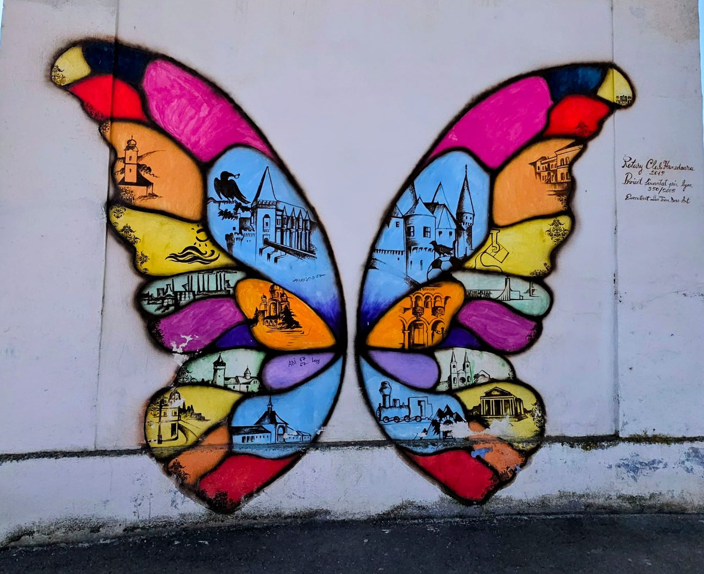
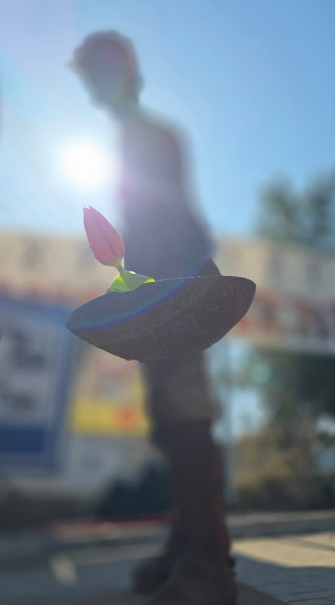
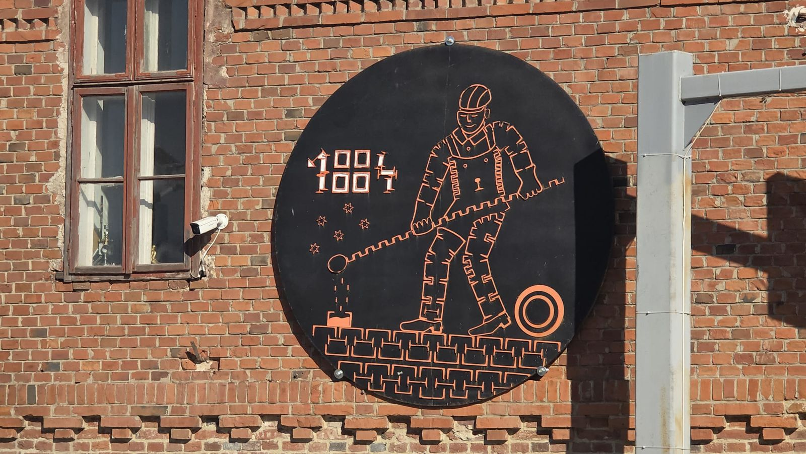
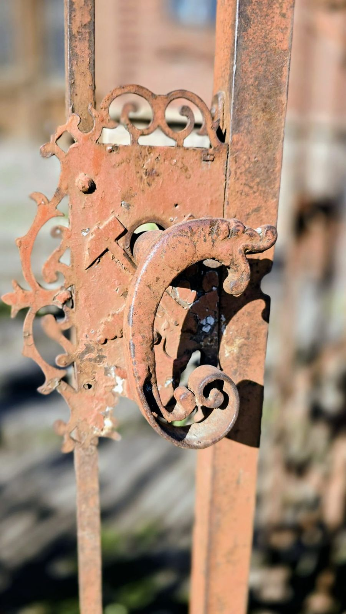
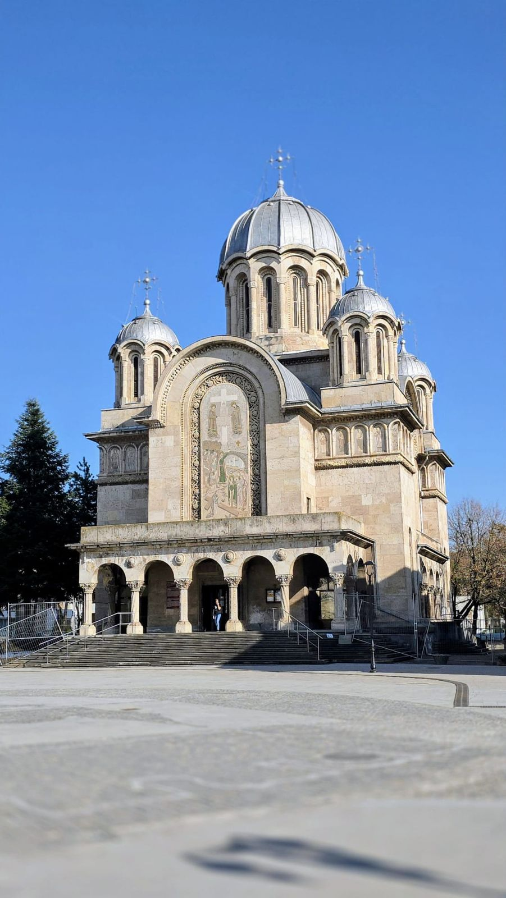
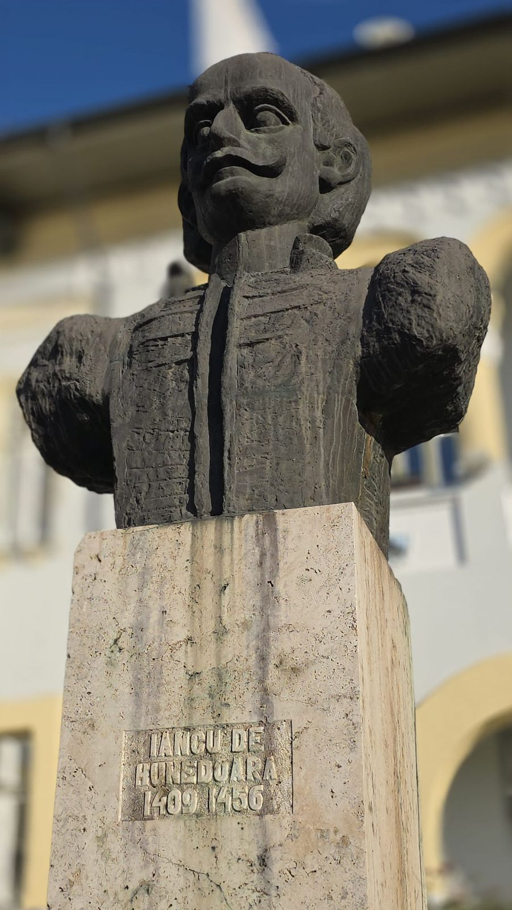
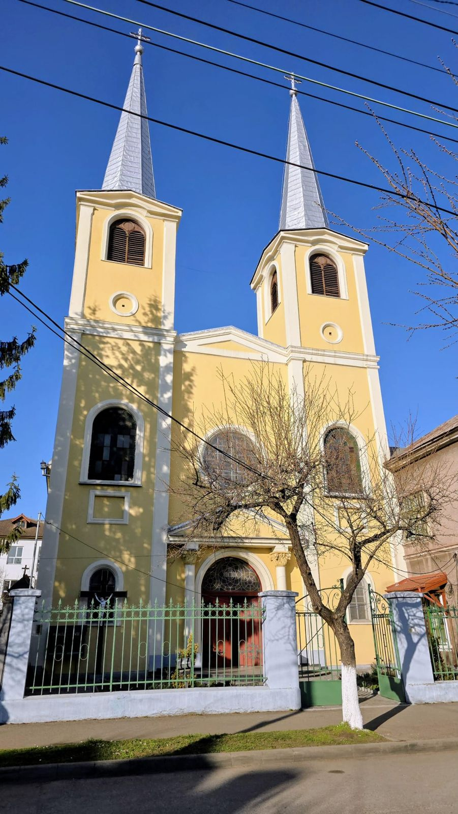
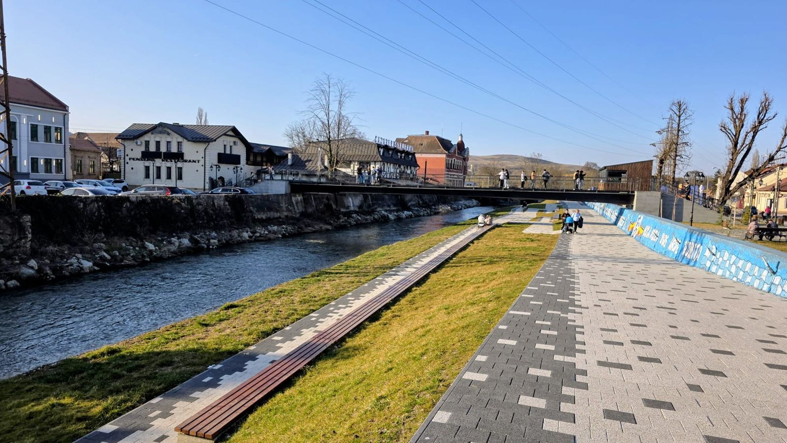
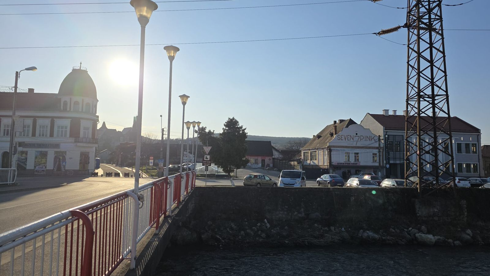
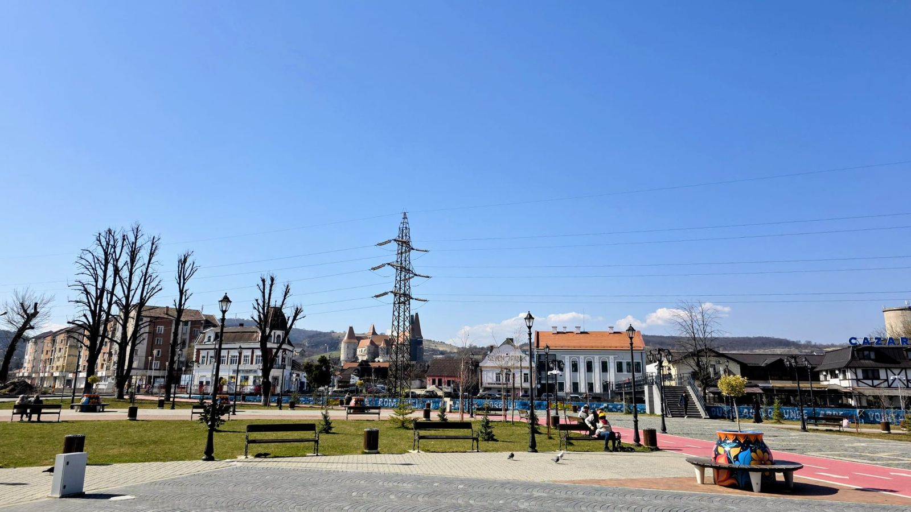
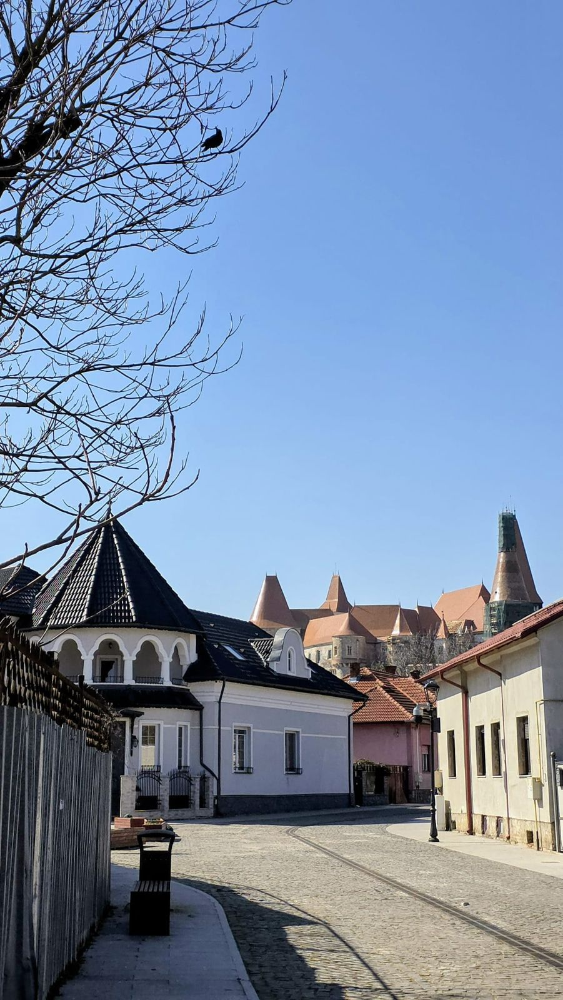
Originally published at fieldnotesfromabroad.com/2026/03/11/the-rhythm-of-a-small-city/